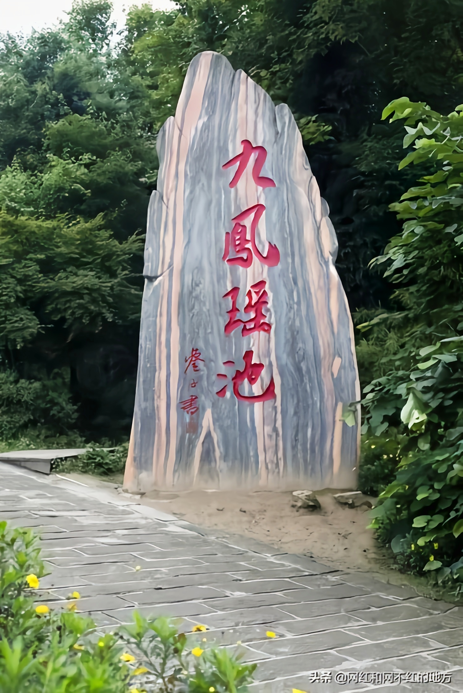
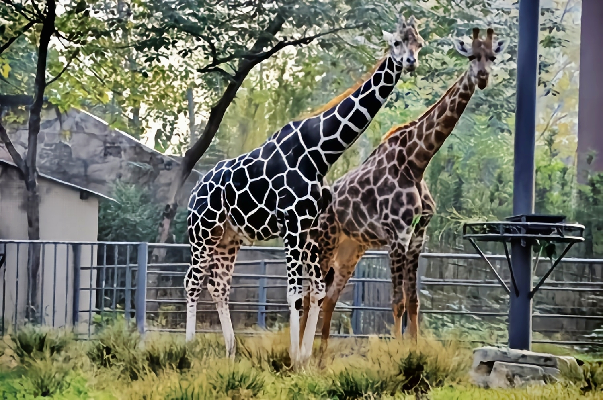
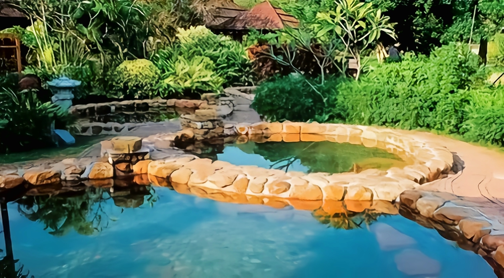

食品放心工程先进区
九龙坡区
隶属重庆市。地处重庆市主城区西部，东与渝中
区相邻，南与大渡口区接壤，西与璧山区和江津区,相
连，北与沙坪坝区毗邻，总面积432平方千米。2021年
九龙坡区常住人口152.90万人，户籍总人口99.46万
人。截至2021年10月，九龙坡区下辖9个街道、10个
镇，区人民政府驻杨家坪街道西郊路27号。
1952年，九龙坡区全境属重庆市第四区。1955
年第四区定名九龙坡区。1965年，划出九宫庙、新山
村和跃进村3个街道建重庆市大渡口区
1952年，九龙坡区全境属重庆市第四区。1955
|  | 九凤山生态旅游度假区面积3.5平方公里，海拔330—580米，由千亩梨花山、百年梨园、九凤瑶池三个片区组成。百年梨园有81棵120年以上老梨树，是迄今发现的重庆地区分布最集中、数量最多的古梨树群。享有“小九寨”美誉的瑶池散布林间，水面如镜、清澈透底，一年四季颜色随季节更替，变幻多端。 |
|  | 重庆动物园（Chongqing zoo），原名西区公园，位于重庆市九龙坡区西郊一村1号，占地面积43.5公顷，年均接待中外游客近360万人次，是集科普宣传、动物保护、科学研究和休闲娱乐等多种功能于一体的大型城市动物园。[1] |
|  | 上邦温泉旅游区，位于重庆市九龙坡区金凤镇海兰村上邦路，是一座以温泉养生为主，集客房、餐饮、会议、康乐为一体的多功能休闲度假型酒店。景区温泉水源自缙云山下2900米深处，日出水量3500立方，属中性硫酸钙医疗型保健热温泉，水中富含锌、锶、氟、锂、锰、钡、镁、硒、偏硼酸、偏硅酸、溴化物等多种微量元素。旅游区有着优越的自然资源和地理位置，置身于缙云山脉的天然氧吧让人有超然脱俗之感。 |